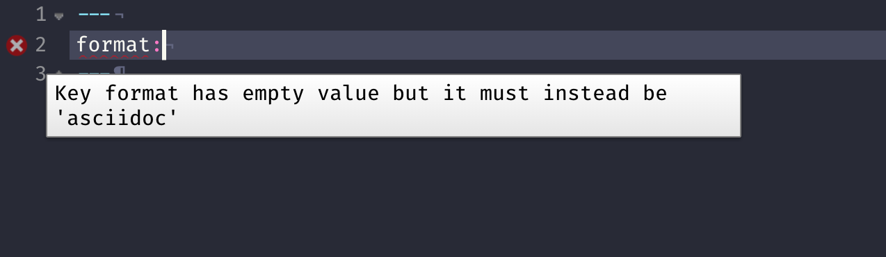
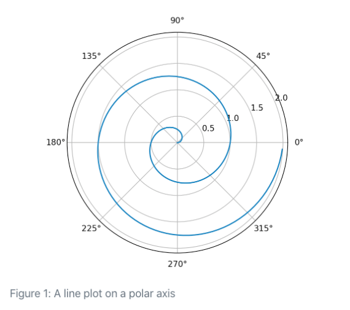

library(quarto)
quarto_render("document.qmd") # defaults to html
quarto_render("document.qmd", output_format = "pdf")1 Metadata
Metadata: YAML
“Yet Another Markup Language” or “YAML Ain’t Markup Language”
---
key: value
---Output Options
---
format: something
------
format: html
------
format: pdf
------
format: revealjs
---Then add option arguments!
---
format:
html:
toc: true
code-fold: true
---Sub-options should be below the main format output and spacing matters!
---
format:
html:
option1: "text"
option2: logical
option3:
- sub-option
- sub-option
option4: [sub-option1, sub-option2]
---Why YAML?
To avoid manually typing out all the options, every time!
terminal
terminal
quarto render document.qmd --to htmlterminal
terminal
quarto render document.qmd --to html -M code fold:trueterminal
terminal
quarto render document.qmd --to html -M code-fold:true -P alpha:0.2 -P ratio:0.3Demo: Navigating within RStudio
Quarto workflow
Executing the Quarto Render button in RStudio will call Quarto render in a background job - this will prevent Quarto rendering from cluttering up the R console, and gives you and easy way to stop.

Rendering
- Render in RStudio, starts a background job and previews the output

- System shell via
quarto render
terminal
terminal
quarto render document.qmd # defaults to html
quarto render document.qmd --to pdf
quarto render document.qmd --to docx- R console via
quartoR package
Our Turn
- Open RStudio and
quarto-workshop/03-computation/visual-editor.qmd - Compare behavior of rendering from RStudio > Render, using the CLI with
quarto render, and in R console viaquarto::quarto_render()
Quarto linting
Lint, or a linter, is a static code analysis tool used to flag programming errors, bugs, stylistic errors and suspicious constructs. - Lint


Quarto YAML Intelligence
RStudio + VSCode provide rich tab-completion - start a word and tab to complete, or Ctrl + space to see all available options.


Single source publishing
Divs and Spans
Pandoc and therefore Quarto can parse “fenced Div blocks”
.big-text {
font-size: 120px;
}::: {.big-text}
A paragraph with big text.
:::A paragraph with big text.
This is text with [special]{style="color:red;"} formatting.This is text with special formatting.
Divs and spans
A fenced div always starts and ends with equal/matching ::::
Minimum and typical :::
::: <- Starts
Content
::: <- EndsAny number can be used: ::::::
:::::: <- Starts
Content
:::::: <- Ends
You can also nest fenced div, just make sure to match start -> end
:::: {.columns}
::: {.column}
content
:::
::: {.column}
content 2
:::
::::
Why ::: instead of <div>
You’re not limited to HTML/CSS concepts - Pandoc and Quarto also have “attributes” that can be assigned in this way.
- You can think of a
:::div as a HTML<div>but it can also apply in specific situations to content in PDF or other formats (Word, Powerpoint, etc) - Similarly,
[text]{.class}spans can be thought of a<span .class>Text</span>but again are a bit more transferable if using Pandoc/Quarto native attributes.
The following, uses a ::: to apply a figure layout Quarto class across formats AND applies a span with {alt-text="text"}
::: {layout-ncol=2}
{fig-alt="An image of a male boston terrier"}
{fig-alt="An image of a female boston terrier"}
:::Callout Blocks
:::{.callout-note}
Note that there are five types of callouts, including:
`note`, `tip`, `warning`, `caution`, and `important`.
:::
Note
Note that there are five types of callouts, including: note, tip, warning, caution, and important.
Warning
Callouts provide a simple way to attract attention, for example, to this warning.
This is important
Danger, callouts will really improve your writing.
Tip with caption
Caution, under construction
Here is something under construction
Callout markdown syntax
:::{.callout-note}
Note that there are five types of callouts, including:
`note`, `warning`, `important`, `tip`, and `caution`.
:::
:::{.callout-tip}
## Tip With Caption
This is an example of a callout with a caption.
:::
:::{.callout-caution collapse="true"}
## Expand To Learn About Collapse
This is an example of a 'folded' caution callout that can be expanded by the user. You can use `collapse="true"` to collapse it by default or `collapse="false"` to make a collapsible callout that is expanded by default.
:::Our turn
- Open
quarto-workshop/02-authoring/callout-boxes.qmd - Try changing the types of callouts/remove them from code boxes and then render
- Open
quarto-workshop/02-authoring/callout-pdf.qmdand render it as well
Tabsets
Split up and flip between sections of a page, alternative to just two columns
::: {.panel-tabset}
## Element 1
## Element 2
:::Tabsets
```{r}
#| eval: false
head(mtcars)
``` mpg cyl disp hp drat wt qsec vs am gear carb
Mazda RX4 21.0 6 160 110 3.90 2.620 16.46 0 1 4 4
Mazda RX4 Wag 21.0 6 160 110 3.90 2.875 17.02 0 1 4 4
Datsun 710 22.8 4 108 93 3.85 2.320 18.61 1 1 4 1
Hornet 4 Drive 21.4 6 258 110 3.08 3.215 19.44 1 0 3 1
Hornet Sportabout 18.7 8 360 175 3.15 3.440 17.02 0 0 3 2
Valiant 18.1 6 225 105 2.76 3.460 20.22 1 0 3 1Tabsets
::: {.panel-tabset}
## Code
```{r}
#| echo: fenced
#| eval: false
head(mtcars)
```
## Output
```{r}
#| eval: true
#| echo: false
head(mtcars)
```
:::Figure layout
- Use a
layoutdiv:::: {layout-ncol=2}or::: {layout-nrow=3}::: {layout="[[70,30], [100]]"}::: {layout="[[40,-20,40], [100]]"}
Figure Layout
::: {layout="[[40,-20,40], [100]]"}


:::
Spans
Whereas a ::: fenced div is useful for application across a paragraph of text or set of images, a [span]{.class} is useful for application to a single item/string within a sentence.
Maybe a footnote1
Or a magically appearing word with an additional point after
Or a magically [appearing word]{.fragment} [with an additional point after]{.fragment}Code
Choose your engine
If no engine specified, Quarto will use whatever language is found first (R = knitr, Python/Julia = Jupyter)
---
format: html
---You can force using knitr if you’re mixing R/Python content via reticulate or if your first code chunk is not R but you want to use R.
---
format: html
engine: knitr
---You can specify Jupyter to use defaults
---
engine: jupyter
---Or a specific Python version
---
engine: python3
---Or even a specific Jupyter Kernel!
---
jupyter:
kernelspec:
name: "venvPython"
language: "python"
display_name: "Python 3.7 (venv Python)"
---knitr code cells
There’s a lot of knitr options!
- See Quarto specific
knitrdetails at: https://quarto.org/docs/reference/cells/cells-knitr.html knitroverview in total: https://yihui.org/knitr/- Jupyter specific chunk options: https://quarto.org/docs/reference/cells/cells-jupyter.html
Anatomy of a code chunk
```{r}
#| label: car-cyl
#| echo: false
mtcars %>%
distinct(cyl)
```- Has 3x backticks on each end
```
- Place engine (
r) between curly braces{r}
- Place options underneath, behind the
#|(hashpipe):#| option1: value
Code
# label: example-code-introduction
#| echo: fenced
#| output-location: column
#| label: fig-airquality
#| fig-cap: Temperature and ozone level.
#| warning: false
library(ggplot2)
ggplot(airquality, aes(Temp, Ozone)) +
geom_point() +
geom_smooth(method = "loess"
)`geom_smooth()` using formula = 'y ~ x'Warning: Removed 37 rows containing non-finite values (`stat_smooth()`).Warning: Removed 37 rows containing missing values (`geom_point()`).
Code, more than just R
```{python}
#| label: fig-polar
#| eval: false
#| fig-cap: "A line plot on a polar axis"
import numpy as np
import matplotlib.pyplot as plt
r = np.arange(0, 2, 0.01)
theta = 2 * np.pi * r
fig, ax = plt.subplots(
subplot_kw = {'projection': 'polar'}
)
ax.plot(theta, r)
ax.set_rticks([0.5, 1, 1.5, 2])
ax.grid(True)
plt.show()
```
Create code chunks
- You can manually type out code chunks:
```{r} - the keyboard shortcut
Ctrl + Alt + I(OS X:Cmd + Option + I) - the Add Chunk command in the editor toolbar
Or use the Command Palette: Cmd + Shift + P/Ctrl + Shift + P
Code chunks options
All code chunk options at yihui.org/knitr/options/
If you’ve used RMarkdown before, you’re likely used to syntax like:
```{r chunk-label, option=TRUE}
```{r, echo = "fenced", eval = TRUE}
mtcars %>% filter(mpg >= 25)
``` mpg cyl disp hp drat wt qsec vs am gear carb
Fiat 128 32.4 4 78.7 66 4.08 2.200 19.47 1 1 4 1
Honda Civic 30.4 4 75.7 52 4.93 1.615 18.52 1 1 4 2
Toyota Corolla 33.9 4 71.1 65 4.22 1.835 19.90 1 1 4 1
Fiat X1-9 27.3 4 79.0 66 4.08 1.935 18.90 1 1 4 1
Porsche 914-2 26.0 4 120.3 91 4.43 2.140 16.70 0 1 5 2
Lotus Europa 30.4 4 95.1 113 3.77 1.513 16.90 1 1 5 2Quarto introduces the “hash pipe” in #| - this is the preferred syntax, although Quarto is backwards compatible with the older RMarkdown syntax.
mpg cyl disp hp drat wt qsec vs am gear carb
Fiat 128 32.4 4 78.7 66 4.08 2.200 19.47 1 1 4 1
Honda Civic 30.4 4 75.7 52 4.93 1.615 18.52 1 1 4 2
Toyota Corolla 33.9 4 71.1 65 4.22 1.835 19.90 1 1 4 1
Fiat X1-9 27.3 4 79.0 66 4.08 1.935 18.90 1 1 4 1
Porsche 914-2 26.0 4 120.3 91 4.43 2.140 16.70 0 1 5 2
Lotus Europa 30.4 4 95.1 113 3.77 1.513 16.90 1 1 5 2Quarto’s hash pipe #|
Why Quarto + #|?
- Consistency across engine (Jupyter/knitr)
- Consistency across YAML/Chunk/
:::options - decrease mental burden when learning/remembering - More control over order/spacing of chunk options - not limited to one running line of options!
Quarto chunk options
```{r}
#| code-line-numbers: "|3-8"
#| warning: false
#| fig-cap: "Air Quality"
#| fig-align: left
#| fig-alt: |
#| "A scatterplot with temperature by ozone levels along with a trend line
#| indicating the increase in temperature with increasing ozone levels."
library(ggplot2)
ggplot(airquality, aes(Ozone, Temp)) +
geom_point() +
geom_smooth(method = "loess", se = FALSE)
```Code in chunk option
You can also execute code inside a chunk option via the !expr syntax:
```{r}
#| code-line-numbers: "|3"
#| fig-cap: !expr glue::glue("The mean temperature was {mean(airquality$Temp) |> round()}")
#| fig-alt: |
#| "A scatterplot with temperature by ozone levels along with a trend line
#| indicating the increase in temperature with increasing ozone levels."
ggplot(airquality, aes(Ozone, Temp)) +
geom_point() +
geom_smooth(method = "loess", se = FALSE)
````geom_smooth()` using formula = 'y ~ x'Warning: Removed 37 rows containing non-finite values (`stat_smooth()`).Warning: Removed 37 rows containing missing values (`geom_point()`).
Quarto and RMarkdown
- Basic RMarkdown documents that render to static HTML and PDF are the most transferable directly to Quarto
R Markdown
title: "My Document"
output:
html_document:
toc: true
number_sections: true
css: styles.cssQuarto
title: "My Document"
format:
html:
toc: true
number-sections: true
css: styles.cssNote that the YAML for Quarto:
- Will follow a
word-wordsyntax
- Instead of using
output: html_document, you’ll useformat: html
One source of the difference in syntax is that Quarto is more closely aligned with Pandoc format names and options (thus the use of - as a word separator rather than _).
Our turn
- Open
quarto-workshop/04-static/old-rmarkdown.rmd - Render via Quarto CLI
Converting RMarkdown -> Quarto
Option 1: Change
.rmd->.qmd- this will ALWAYS use Quarto for renderingOption 2: Change YAML’s
output: html_document->format: html- uses Quarto
Converting knitr chunks
knitrdev version as of 2022-08-06 has:knitr::convert_chunk_header("doc.qmd", output = identity)
knitr::convert_chunk_header()converts:fig.width=1syntax to#| fig-width: 1- across all code chunks in a entire document
But again - you don’t have to convert syntax of all your old documents, can use quarto render at terminal or use R + quarto::quarto_render() to render existing RMarkdown docs via Quarto
Remember the ::: {layout}?
You can do similar things with chunk options and plots from code!
```{r}
#| code-line-numbers: "|4"
#| output-location: fragment
#| layout-ncol: 2
#| fig-cap:
#| - "Speed and Stopping Distances of Cars"
#| - "Engine displacement and fuel efficiency in Cars"
cars |>
ggplot(aes(x = speed, y = dist)) +
geom_point()
mtcars |>
ggplot(aes(x = disp, y = mpg)) +
geom_point()
```

Chunk option layouts
```{r}
#| code-line-numbers: "|7"
#| output-location: fragment
#| fig-cap:
#| - "Speed and Stopping Distances of Cars"
#| - "Engine displacement and fuel efficiency in Cars"
#| layout: "[[40,-20,40]]"
#| fig-height: 4
#| fig-format: retina
cars |>
ggplot(aes(x = speed, y = dist)) +
geom_point()
mtcars |>
ggplot(aes(x = disp, y = mpg)) +
geom_point()
```
Aesthetics
HTML Appearance
Out of the box, Quarto’s HTML is styled with Bootstrap 5 and opinionated defaults.
Bootstrap is the most popular CSS Framework for responsive websites, where v5 is the latest.
Quarto comes pre-installed with 25 themes from Bootswatch and you can use them like so:
---
format:
html:
theme: litera
---Or you can use a theme and further customize components with SCSS/SASS.
---
format:
html:
theme:
- litera
- custom.scss
---Bootswatch themes


Our turn
- Open
quarto-workshop/04-static/bootswatch-themed.qmdand try out some themes!
- 25 bootswatch themes
Presentations
Embrace reveal.js
---
title: "My first presentation"
format: revealjs
---## Slide 1
- Content
## Slide 2
- Content
{fig-alt="A description of an image"}
## Slide 3
```{r}
#| echo: false
ggplot(mtcars, aes(x = disp, y = mpg)) +
geom_point()
```Embrace reveal.js
- Create new slides with level 1 or level 2 headers (
## Heading) - Add content/lists/images/code
Use fenced divs ::: for columns
- Content on the left
- More content
- Additional list
A paragraph of text that is important to hold on the left, but it’s fun to include below a list.
- Image on the right
Columns
:::: {.columns}
::: {.column .fragment}
- Content on the left
:::
::: {.column .fragment}
- Image on the right
{fig-alt="A picture of my dog Howard sleeping with his head smushed against the side of the couch"}
:::
::::Quarto Projects
Quarto projects
Quarto projects are directories that provide:
A way to render all or some of the files in a directory with a single command (e.g. quarto render myproject).
A way to share YAML configuration across multiple documents.
The ability to redirect output artifacts to another directory.
The ability to freeze rendered output (i.e. don’t re-execute documents unless they have changed).
In addition, projects can have special “types” that introduce additional behavior (e.g. websites or books).
Quarto Projects
- A Quarto Project is at minimal one Quarto document and the
_quarto.ymlfile
_quarto.yml
_quarto.yml
project:
output-dir: _output
toc: true
number-sections: true
bibliography: references.bib
format:
html:
css: styles.css
html-math-method: katex
pdf:
documentclass: report
margin-left: 30mm
margin-right: 30mmQuarto Projects
- Books, Websites, Blogs are a Quarto project
- Want to learn how to build a blog? Join Isabella Velasquez from RStudio in our next Quarto webinar!
- Add to your calendar: rstd.io/quarto-blog
Footnotes
Maybe a footnote^[This is important text]↩︎